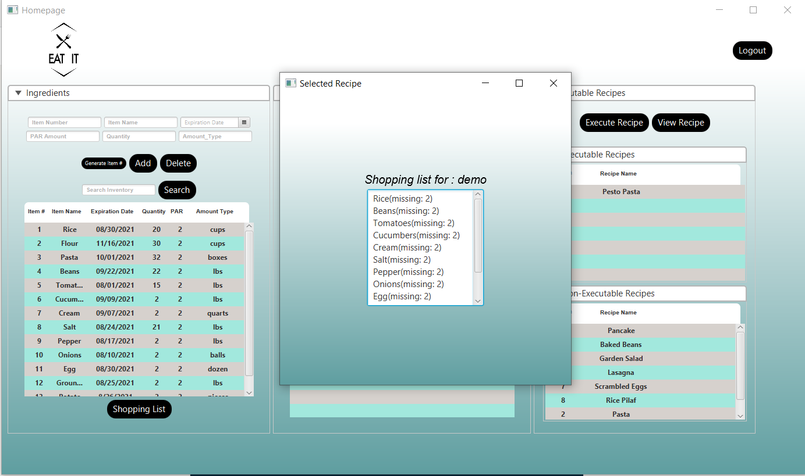

Eat It, a Restaurant Software Application
"Eat It", is a software application developed by Matthew Zuberhuler, Andre Lynch, Bob Thomas, and myself, Sergio Gutierrez. The application was developed in an agile environment, in three sprints, and with daily scrum meetings. The application is primarily for restaurant owners, but could also be used by anyone who frequently cooks and uses recipes.
"Eat It", has a user registration/login feature that saves each user's data which is stored in an SQLite database. The schema of the project contains 5 tables: login, recipe, recipeSteps, ingredients, and ingredientList. The front-end part of the project was developed in JavaFX, and the backend is pure Java. The video above is a brief explanation of the application. If you are interested in exploring the github of the project, you can go here: https://github.com/sergiogutierrez2/CS160EatIt
This software application allows users to keep track of their inventory, add or delete ingredients to a list, create ingredient lists, add/delete recipes, create recipe lists, generate shopping lists (which can be generated based on the lack of certain ingredients), execute recipes (by subtracting the number the ingredients needed for such recipe to the total count of ingredients), and much more.
The video above shows how to execute a recipe, where a random cooking animation gets displayed. I personally worked on that part of the application to make it function. The operation taking place in the background, subtracts the ingredients needed to prepare and cook the recipe, and subtracts them from their respective ingredient lists. For instance, if a user has 20 eggs and 30 cups of rice, and a recipe requires 2 eggs and 5 cups of rice, then after pressing the "execute" button, the user will be left with 18 eggs and 25 cups of rice.
The front-end part of the project, contains a variety of textfields that the user can interact with, such as Item number, Item Name, Expiration Date, Quantity, etc. I edited these textfields to have restrictions for input validation purposes. For instance, the Item Number textfield will only allow the user to input digits, disallowing any other symbol. Furthermore, there is a limit in each of these fields (such as 8 digit limit in the Item Number). The software also forces the expiration date to have a date format, disallowing any other format for the input. There's also a "search" fields which has a search engine that matches the user's string.
Another feature of the program, is that it generates a shopping list. This takes into consideration the existing amount of each ingredient, minus the PAR amount of each ingredient (which is the minimum amount needed to keep the business going). If the result is negative, then the ingredient is added unto the shopping list. Each ingredient has a unique item number (as per our designed schema), which is useful to keep track the ingredients and the recipes needed to keep the operations running. This was a fun project to work on, and one which gave me a great experience developing Java applications.